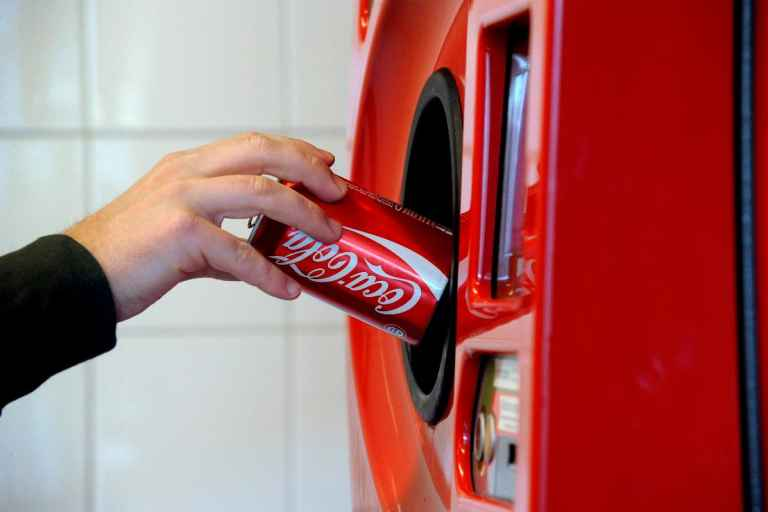
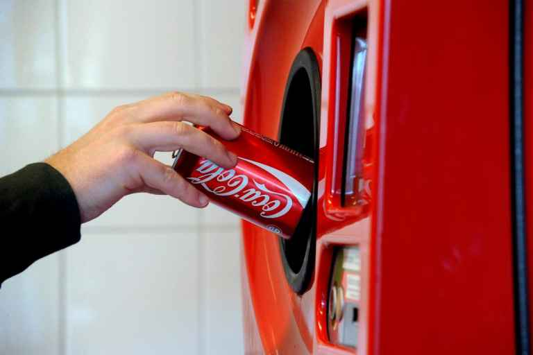

hur man sparar vår miljö bättre
miljön har funnits mycket länge. Miljön att vi människor och djur står här på jorden idag. Utan miljön och vatten skulle vi inte leva. för att spara mer på miljön panta flaskor, istället för att slänga pappret lägg det i papperinsamlingen. använd inte för mycket elexcritet! om ni har råd köp en elbil. den är bättre för miljösamhället.
Spara på miljön.K.S 
